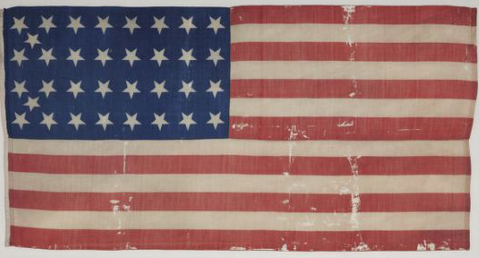
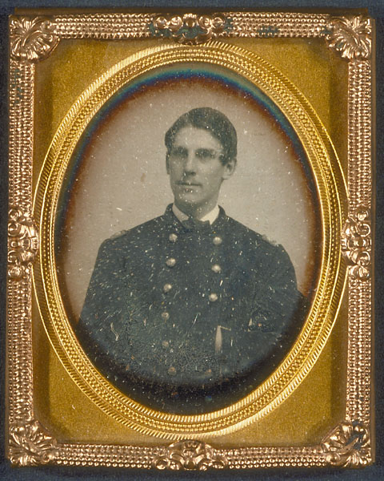
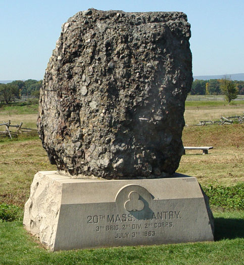

|
In the maelstrom of violence that was the Civil War, it
would be a most difficult proposition to find a regiment
that ushered itself more fully into the campaign, from
Sumter to Appomattox in mind and body, than the 20th
Massachusetts Volunteer Infantry. This regiment from the
eastern reaches of New England not only carried in its ranks
the cream of Northern youth and the hopes of a splintered
nation, but an indomitable fighting spirit that would be
painfully hard to break. From the halcyon summer of 1861,
through the mud and disasters of 1862, to the glory of
Gettysburg and beyond, the 20th Massachusetts was fully
pledged to the action. The 20th Mass. was a fighting unit
that went above the simple call to arms through its conduct
and longevity. It is only in a watershed event that an
introduction to the regiment and the path it followed can be
investigated. It was their first contact that provides this
motif as it would define the regiment for the duration of
the war. By investigating the regiment before the Battle of
Ball's Bluff in 1861, including issues of training and
morale, and the conduct of the affair itself, the initial
problem facing the regiment becomes clear. By studying the
trials of the regiment, especially regarding leadership and
stratification, and the -factors that allowed for its
glowing conduct, including the spirit and steadfastness
exhibited by the men through it all. the true character of
the 20th Massachusetts can be elucidated.
It is to the regiment itself where our attention must now
shift, for in the spring of 1861, the call to arms was
sounded. It is here that a brief period must be devoted to
an introduction of two officers who answered this call whose
words, written during the war in testimonials to loved ones,
|

American flag carried by the 20th Massachusetts
Infantry
|
serve as our compass. The first is Henry Louis Abbot, who
was commissioned at the tender age of 20 as first lieutenant
of Company I. Abbot enlisted in 1861, telling his parents
that it would be easier than his stay at Harvard, and that
'he "should be ashamed of himself if he did not do something
now." From his early days of command, Abbot epitomized the
bravery of the men of the 20th and until his death on the
field at the Battle of the Wilderness in 1864, would paint a
picture of his regiment in his letters home, compiled in the
book Fallen Leaves .
In this same role was Oliver Wendell Holmes Jr., son of
the great physician. Holmes, like Abbot, attended Harvard
and received his commission in 1861. Again, like his
comrade, Holmes captured the fervor with which his regiment
conducted itself, as well as commenting on the character of
the regiment in his letters, duly compiled in the book
Touched With Fire. Wounded three times during the war,
Holmes was one of the few original officer of the 20th who
survived to be mustered out in 1864.
It was this call that sent Massachusetts into a feverish
preparation, one that would spawn the 20th. There were two
key elements that provided for this massive ground swell of
support, the greatest being the need to save the Union.
There was a pervading unanimity regarding this issue early
in the war as New Englanders asserted the need for a united
country. In August of 1861, the Springfield Republican
stated "that ninety-nine in every one hundred of the people
of Massachusetts were in favor of Union and were loyal
supporters of the government. Perhaps not as equal in sheer
numbers but equal in intensity was the cry of the
abolitionists, a great many of whom came to populate the
20th. Massachusetts Governor John Andrew himself was a
renown anti-slavery man and represented the "abolitionist
sentiments that...were shared by most of the Massachusetts
troops.
So with these intense opinions serving as the guide for
soldier and civilian alike, the state set about readying the
20th for battle. Governor Andrew secured the newest Enfield
rifles for his state's regiments and was so intense about
acquiring the best gear for his men, he became known
affectionately known as "Overcoat". The regiment was so
well equipped that when it reached the shores of the
Potomac, Colonel William Lee, in command of the 20th,
answered a query regarding his soldiers' clothing and
equipment status by saying, "My regiment. Sir, came from
Massachusetts!"
Now the men of the 20th, who were the beneficiaries of
this quartermaster's dream, were a motley assemblage if ever
there was one. The 20th Mass. was unique in that, unlike
many other regiments from all over the country, its ranks
were not drawn from one specific region of the state. The
20th Mass drew men from farms, from the fisheries of
Nantucket, and from the upper crust of Boston. The
occupations ranged from anything from sailor to teamster to
melodeon maker. In the midst of this, the regiment also
mustered in two companies of Germans, Companies C and E.
Because the 20th was one of the later regiments assembled in
Massachusetts after the first call to arms, the cause behind
this diverse group becomes clear. The 20th mustered in this
heterogeneous population for a three year enlistment because
it was one of the later regiments formed in 1861, hence,
enlistees were taken wherever they could be found. Most of
the previous regiments had been taken mainly from the same
regions of Massachusetts, thus those numbers had been
thinned considerably. Because of this dearth of men, the
regiment started out under strength, mustering only 500 men
on July 2, 1861, and 750 in August of that year, out of a
prescribed 1,000.
The officer corps mirrored this same issue, the fact
being that there was a shortage. The field officers, who
would be brigade commanders or generals, were chosen from
among politicians and former officers. These officers were
men like Senator Edward Baker, who would serve as a colonel
and be the superior officer on the field at Ball's Bluff,
and Charles Baker, a General and West Point grad, who
commanded the Corps of Observation, encamped along the
Potomac, in October, 1861. It was the lack of junior
officers that posed an even greater problem, for the tried
and true leaders from around the state had been swept up in
the first wave of enlistments. Thus these men were selected
from an application pool, not via election, based upon
family histories and education. As part of this summons to
Massachusetts' bud-ding elite, graduates twelve of Harvard
University were never refused a commission. Thus, no fewer
than twelve of the junior officers for the 20th Mass. were
graduates of Harvard, a fact which spawned the moniker, "The
Harvard Regiment". Soon, names like Wendell Holmes, Revere,
and Lowell became a part of the 20th. These are names that
go beyond a Harvard degree, for they also met the criteria
for family history. Not all of the officers were Harvard
grads, and the lieutenants in charge of Companies B and C,
the German companies, were also Teutonic. It is vital that
the mosaic nature of the 20th be delineated early, because
great strife will be borne out of this diversity, which was
a rare fact in the early Massachusetts regiments.
Now as this hearty regiment prepared to mobilize south in
September, 1861, to join McClellan's Army of the Potomac,
there was one final finishing touch needed that was to be
supplied by the people of their home state. The regimental
colors were presented by Governor Andrew and, on its
off-white surface, bore the state's coat of arms and, on the
back, the words "Fide et Constantia." The significance of
this flag, and, more importantly, its premature retirement,
will become more clear later in this discussion.
It was with this spirit, this esprit de corps, that the
20th moved south, itching for a fight. In fact, a high
level of morale was about all these men had to carry them
through the rigors of combat. After having been organized
in August of 1861, the regiment had roughly six weeks to
train as a unit before it shipped out to link up with the
Army of the Potomac, and much of this time was spent in
transit between camps. The lack of training and military
discipline was compounded by the fact that the regiments'
officers were as green as the men, and Harvard had spent
little time prepping them in the art of war. One advantage
that the 20th did have was in their commanding officer, Col.
William Raymond Lee. Lee, who had attended West Point, was
one of the few professional soldiers in the Union Army.
While most regiments were commanded by inexperienced
businessmen or politicians, the 20th had a hardened soldier
to prep them for war. Indeed, the regiment wrote a tribute
to him later in the war, which stated, "his discipline was
severe, but not debasing; manly sentiments were encouraged,
not repressed." The problem was, Lee's efforts were
undermined by a lack of time and an overarching lack of
experience among his subordinates. While the regiment
engaged in standard training exercises, a problem that
sabotaged many a training camp also hurt the 20th, for most
of the officers knew next to nothing about war, let alone
the commanding of men fighting in one. It was a most
difficult proposition to expect officers who knew precious
little to teach men who knew even less.
These shortcomings were not recognized by a regiment that
was thirsting for contact with the enemy. The 20th linked
up with Stone's Corps of Observation on the Potomac where
the men's blood set to boiling as they readied themselves
for their first battle. Abbot wrote of this time, "I have
always wanted a speedy engagement ... to be ordered over the
river. The fact is we are all very impatient." When the men
would net ordered across the river, the 20th Mass would get
its speedy little engagement and then some.
A regiment's first time in combat would tell much about
their character, preparation, leadership, and fighting
ability, and it was when the 20th Mass was engaged for the
first time that they learned firsthand what these lessons
are. It was this selfsame first engagement that would be
the watershed event for this regiment, and it is here that a
discussion of why they fought begins in earnest. Better it
be framed here, because the result of first contact and its
aftermath is the key to understanding the character of the
20th Mass. Better to frame it against the Battle of Ball's
Bluff, October 21st, 1861.
It was termed "a slight demonstration" but the Battle of
Ball's Bluff, while small in scale when compared to the
Antietams and Gettysburgs of the war, was the defining
moment of the Civil War for the 20th. On October 21st, the
regiment, along with other elements of Stone's Corps,
crossed the Potomac in pontoon boats in an attempt to push
the Confederates out of the Virginia town of Leesburg. The
men of the 20th scaled the bluff overlooking the river and
were immediately exposed to murderous fire from Confederate
soldiers concealed in the woods beyond. Despite the fact
that the 20th, under the overall command of Colonel Baker,
had the cliffs to their rear and the enemy to their front,
"the men put up a valiant defense and held their ground as
best they could." It was when the regiment again came under
heavy fire from the advancing Rebel lines that the mission
turned into a disaster. Men turned back and fairly jumped
down the cliffs into the river either dying from the landing
or drowning, those who remained on the bluff were either
shot or captured. Those who made it safely to the shore
found a shortage of boats to carry them back across as Gen.
Stone had failed to plan for this contingency. In the midst
of this general retreat, the 20th was one of the last units
to leave the field, rallied by officers like Abbot and
Captain William Bartlett. When the time came, what was left
of the regiment was moved across the river in groups of five
until the retreat was complete. In their first combat
experience, the 20th had stood its ground and held the
field, for the most part, until the bitter end.
It was because of this resiliency that the portion of the
regiment engaged, some 300 strong, took staggering
casualties, with 195 killed, wounded, or captured, The most
damaging part of these astronomical casualties was the
number of regimental officers that were killed, wounded, or
captured. No fewer than 14 were lost, with the beloved Col.
Lee and Major Paul Revere, grandson of the famous patriot,
captured. Only eight of the 22 that took the field returned
to Union lines unscathed. The staggering losses prompted a
Confederate officer to note that "fewer of the Massachusetts
officers would have been killed had they not been so proud
to surrender." This first contact left the regiment in a
poor tactical situation, and the next four months, while the
20th retooled its savaged ranks and refurbished the depleted
officer corps with multiple commissions before the Battle of
Yorktown, would tell how the regiment would react to such a
disastrous introduction and how they would craft themselves
into a powerful regiment once again.
The battle, aside from gutting the ranks, showed the
glaring holes in a regiment that had left under so much pomp
and circumstance. Perhaps the primary chink in the
proverbial armor was leadership. Not -so much the
leadership of the junior officers, for men like Abbot had
carried themselves bravely; as Captain Bartlett stated,
"(Abbot) was as cool and brave as I knew he would be." It
was the leadership of the "top brass", primarily of General
Stone and Colonel Baker, who died on the field, that left
the regiment in tatters, its men frustrated, and its home
state devastated. Abbot summed up the pervading feelings
regarding these men as he stated, "I have no doubt that if
Col. Baker had been possessed of a spark of military genius,
the field would have been ours. As for General Stone, I
believe him to be a nincompoop Indeed, a Joint Senate
Committee investigated Stone's actions during the battle and
recommended he be imprisoned without being formally charged.
This failure of the upper echelons of command left a bitter
malaise among the men of the 20th, and prompted Holmes to
write "the army is tired with its terrible experience and
still more with its mismanagement." No other interpretation
can be taken from these words other than the regiment was at
rock-bottom. The morale of the 20th, which had been so high
mere days before, was at its lowest point of the war.
There was another deficiency brought to light in the 20th
Mass. and that was in their military training, or lack
thereof, It was discovered under the cannonade at Ball's
Bluff that the "Bay Staters had got a long way from the old
tradition of the minuteman with his every-ready rifle." Most
of the men had simply taken their shiny new Enfields, closed
their eyes, and squeezed the trigger. This was a regiment
that, green to a man, had gone up against troops seasoned at
First Manassas, and had been trounced. Most of the troops
did not know how to conduct themselves under fire and with
so many officers lost early in the fight, rallying the
troops was a near-impossible task. Alongside this lack of
experience was a lack of discipline in the 20th, even though
most of the men comported themselves with the utmost
composure. The prime examples of this were Lt. Wesselhoeft
of Co. C and Capt. Alois Babo of Co. G. Both of these men
had fled the bluff and jumped into the Potomac in an attempt
to get away. While Babo was shot by Confederates on the
ridge above, Wesselhoeft drowned in the river, his uniform
and equipment unscarred by the battle.
This was the situation faced by the 20th Mass as 1862
dawned, This regiment, with all of the backing in the world,
commanded by the cream of a nation's young men, had been
decimated in its first combat. Not just decimated by a
superior foe, but by those unseen enemies that haunted both
armies during the Civil War, incompetent leadership and a
lack of training. As the regiment had been mauled
physically, so too had its hearty morale been dealt a severe
blow, as the words of Abbot tell us. If this was not
enough, the ugly internal difficulties faced by the 20th
began to rear themselves at this most inopportune time.
Just as the 20th needed to overcome the external beating
that it had received, it needed to prevent strife and loss
from splitting the regiment from within. In a regiment as
diverse as the 20th, certainly some fractionating would
reveal itself, but the intertwining obstacles that the 20t'h
faced make the fact that unit integrity was maintained to
the point where the regiment could take the field is quite
something.
The first element, the first shortcoming, literally and
figuratively, is one that directly fed into a myriad of
other issues. This cornerstone was the chronic shortage of
officers in the regiment. There was a leadership vacuum in
the 20th that likely was worse than in any other comparative
regiment. The 20th was afflicted with an officer corps that
had some innate method of getting itself killed, wounded or
captured. From the horrific losses at Ball's Bluff all the
way up to Abbot's death in the Battle of the Wilderness,
there was a constant drain on the regimental officers. By
March of 1862, even before Battle of Yorktown, when Captain
Allen Beck with and Lieutenant John LeBarnes were removed
from their posts "on account of stupidity, ignorance, and
vulgarity ... this removal leaves only one of the regular
old 20th officers as the regiment was originally organized."
The situation grew worse as the regiment fought on. Another
eight officers fell at Fredericksburg, leaving the regiment
with only five, and of 13 who took the field at Gettysburg,
only three emerged unscathed. When the regiment was
mustered out in 1865, "of the 34 officers who had mustered
in with Oliver Wendell Holmes' 20th Massachusetts, only two
were still present when it mustered out four years and ten
days later." As the officer corps continued to dwindle, the
regiment had to look for stopgaps. One boost came in 1862
when Col. Lee and Major Revere were released from execution
at Libby Prison by an eleventh hour decision by President
Lincoln to release a Confederate privateer (although neither
officer would serve past Gettysburg). Another came with
Holmes continued returns to the regiment after his wounding
on three separate occasions. Even with these efforts, the
problem worsened as combat trauma wreaked a heavy toll for,
as Holmes wrote, "I tell you many a man has gone crazy from
the terrible pressure." The prime example of this was Col.
Lee, who after the Battle of Antietam, was "undoubtedly very
much shaken in his intellects. After the battle he was
completely distraught." Col. Lee then rode off, and was
found four weeks later in a horrible state. He resigned one
month later. The other episode involved Brigadier General
James Wadsworth, who, commanding a division of the 5th Corps
in the Battle of the Wilderness, ordered the 20th Mass to
leave their breastworks and charge a wall of trees where
absolutely no Confederate soldiers lay in wait. It was his
next move that was more costly. Gesticulating wildly,
Wadsworth commanded the 20th to charge real Confederate
positions, where it met with heavy losses.
With issues such as these continually cropping up, there
were never enough junior officers to fill the regimental
quota, and a compensatory measure brought to light another
burgeoning problem within the ranks, the presence of
foreigners. As the regimental losses got higher and higher,
an unidentified foreigner was made a candidate for command
of the regiment in January, 1863. This announcement was met
with derision from the ranks, bringing to light an intrinsic
|

Future Supreme Court justice Oliver Wendell Holmes
was the best known member of the 20th Massachusetts Infantry
|
dislike of foreigners by the bluebloods of the regiment.
Abbot wrote in regards to this issue, "the idea of a
foreigner...being put over a regiment which has seen as much
service as any in the field, and over officers who have
earned their promotion by wounds and good services is too
atrocious to be endured." Indeed, it is in regards to this
same issue that Abbot makes one of his two recorded
overtures at desertion. Again, when Captain Ferdinand
Dreher, a German, assumed regimental command, his tenure was
met with derision, with Abbot calling to "depose these
insolent, ignorant, vulgar fellows who are demoralizing the
regiment." When Revere came back from prison, even though
the regiment did not particularly care for him, his command
was welcomed over the "crack brained Dreher", a reference
made by Holmes to Dreher's head wound at Ball's Bluff.
The animosity was not solely directed towards the foreign
officers, for they harbored as much ill will to their
American counterparts. The two German companies in the
regiment also had German officers, with Dreher commanding
Company C, and Captain John Herchenroder commanding Company
B. A George Schmitt was also in command of Company E. This
cadre of foreign officers had a number of clashes with their
Harvard educated counterparts, and Dreher wrote a letter to
Governor Andrew on the subject, stating,
"the regiment was officered by young men, belonging to a
certain aristocratic clique. Not only we German officers in
the regiment were made to feel it. I would take all the
military science of these gentlemen and put them in a
private, and it would not make the best sergeant we have."
The clash between foreign and domestic did not just end
in the officer corps, for it metastasized into the enlisted
ranks. As the war ground on, and the casualty rolls for the
20th, as well as the rest of the army of the Potomac, grew
larger and larger, more and more foreigners were used to
fill the holes. In late 1863, as these men joined the ranks
in ever-increasing numbers, many deviated from the strict
code of conduct that had typified the 20th Mass. Illness
and desertion left the 20th no recourse but to have a
veteran guard a conscript on picket duty so as to prevent
his desertion. The fact was, that "these fellows have been
deserting terribly, particularly the Dutch and the French.
Desertion in the field and, worst of all, desertion to the
enemy, was almost unknown before this jumble of French,
Italians, Germans, and, in some cases, Chinese, came to us."
This regimental dilution also bore witness to troops
fraternizing with the enemy, rendering the pickets
ineffective. As Bell Wiley tells us in Bill Yank "good
feelings of Yanks towards Rebs manifested itself in varied
forms of fraternization." As far as the officers were
concerned, such activity was a punishable offense, while
desertion, as Abbot tells us, was punishable by death, a
penalty that was often enforced within the regiment. Harsh
penalties were necessary, for as the officer corps was being
thinned out, it was harder to maintain institutional
control.
These conflicts revolving around the presence of
foreigners brings to light another issue faced by the 20th,
and that was social stratification within the ranks. The
officers of the 20th, along with many enlisted men from
Boston, were members of the social and economic elite, and
in many cases, wished to separate themselves from their
fellows based on this fact. This elite felt a need to prove
itself to those who doubted their performance based on their
cushy lifestyle. This "Brahmin caste had long ceased to play
any active part in the dusty arena of political turmoil.
Pointing to the necrology of Harvard University ... the
American people had no further excuse for rejecting the
political and social authority of what was now a tried and
true Aristocracy." But in the midst of their charge for
power and glory, this regimental elite managed to alienate
much of the remaining portions of their regiment. Like the
Brahmins of India, their membership looked upon the rest of
the regiment as the "untouchables". As Holmes, himself a
member of this privileged class, wrote, "the lines of nature
... establish orders and degrees among the souls of men."
The obvious response to this is simple, most men did not
tolerate it. Frank Wilkeson wrote, in representation of
this feeling, that "enlisted men were the equals of their
officers, and not a few... the superiors." So as the 20th
bivouacked in camp during the Civil War, the rich and the
poor, as part of an age-old problem, were not the first to
break bread to ether around the campfire.
A problem far greater than this that was present in the
ranks of the 20th Mass. was the question regarding the
abolition of slavery. As discussed earlier, the state of
Massachusetts was decidedly pro-abolition, with Gov. Andrew
and William Lloyd Garrison leading the rhetorical charge.
The 20th Mass put its two cents in on this issue early on.
In September, 1861, Brig. General Stone issued general
orders "not to incite and encourage insubordination among
the colored servants in the neighborhood of the camps." When
two fugitive slaves fled across the lines of the 20th Mass,
Col. Lee had them exposed and returned, according to the
tenets of the Fugitive Slave Law, passed as part of the
Compromise of 1850. This action aroused the ire of the men,
for as Holmes put it, "war, the brother of
slavery-brother-it is slavery's parent, child, and sustainer
all at once." Sentiments like these prompted Gov. Andrew to
write a letter on the behalf of the regimental majority that
favored the abolition of slavery.
But problems arose regarding the freeing of the slaves
because not all of the men of the 20th shared the sentiments
of Holmes and other abolitionists, and it is an
understatement to say that this was a fiery issue. Here
again we can turn to Abbot to render the feelings of those
who would not support abolition as a motivating factor for
war. "The abolitionists ... will get floored as they
deserve. I haven't seen any men or officers in this part of
the loyal army who are willing to fight for abolitionists,
though I hope we are too good soldiers to disobey if such
are the orders." Here again, Abbot threatens desertion in
regards to an issue to which he felt exceedingly strongly
about. It is interesting to note his words, because, while
the literature consistently claims the 20th as being a
regiment with strong abolitionist leanings, Abbot is
unfamiliar of such sentiments, suggesting extreme divisions
and/or lack of communication along these lines.
There is one final pressing division within the regiment
and it springs from another of the many pseudonyms given to
the 20th. This one assigned them the title of the
"Copperhead Regiment." The sentiments towards such men in
the Union Army were, for obvious reasons, very poor. A
soldier from Maine wrote that he was "brim full of with hate
and contempt for the meanest of our country's enemies, viz.
the Northern Copperheads." Certainly, had such anti-war
sentiments existed in the 20th, the consequences could have
been dire, as many soldiers spoke of favoring the shooting
of a Copperhead to the shooting of a Confederate soldier.
There is no question that there were strong Democratic
sentiments in the state of Massachusetts during the war, but
it was the alleged pro-Southern leanings of the men that
landed the 20th with this stigma.
It is the Battle of Ball's Bluff which landed the most
telling blow in these accusations regarding the 20th, for it
was the notorious General Stone in charge that day. Recall
that it was Stone who had ordered the arrest and return of
contraband who had crossed the regiments' lines in late 1861
in a move supported by many of the regiments' officers,
including Lt. Macy and LeBarnes. Now Stone had been in
command of Massachusetts' pride and joy and had failed them
miserably. This offered him up as a perfect scapegoat for
Andrew and Sen. Charles Sumner, and on February 8, 1862, he
was arrested and brought before a Joint Committee, chaired
by Sen. Ben Wade of Ohio, a diehard Radical Republican.
Sumner was convinced that "Stone, together with the apparent
pro-slavery officer clique in the 20th, was responsible for
Ball's Bluff." With this debacle in the background, the
title of "Copperhead Regiment" would stick.
There is one quality of the regiment that rebuffs this
stigma, and it is simply the 20th's combat record. It is
certainly hard to question where a fighting body's
allegiances lie when it fights like the 20th did. It is the
redoubtable Abbot, who showed himself time and again to be a
man ready to fight like a demon for his union and expect the
same behavior from his men, who proves this point. After
the battle of Gettysburg, when Copperhead rhetoric was at
its height in Massachusetts, he wrote, in reference to the
election of 1864, "Hurrah for the time when we shall have
our heels on their necks, especially in Massachusetts. Tell
them of the Copperhead regiment that lost over one half of
the enlisted men, and 10 out of 13 officers." It is hard to
argue with such logic, and it is on this point that we can
begin an investigation into why this regiment was able to
fight in the manner that it did for such an extended period
of time.
This is the burning question because this regiment,
crushed in its first combat, wracked by a dearth of junior
officers and a lack of faith in senior officers, torn
between nationalism, social stratification, and
Copperheadism, staggered out of the shadow of Ball's Bluff
and fought on. At the Battle of Antietam in September, 1862,
"the 20th Massachusetts proudly recorded that it left the
West Wood at a walk, in columns of fours, muskets at right
shoulder." Again, at the Battle of Fredericksburg, the 20th
Mass. burned itself another place in Civil War lore, as it
led the charge through the streets of Fredericksburg.
Finally, at Gettysburg, elements of the 20th helped repulse
Pickett's Charge on the third day of the battle, as well as
plug holes in the right flank of the Union lines to help
clinch the day for the Union.
Our discussion begins with the post mortem from Ball's
Bluff. Ball's Bluff is the key, because, directly after the
battle, as the regiment licked its wounds, rhetoric that
would manifest itself in the 20th's most noble conduct was
immediately espoused. The best example of the
steel-backboned attitude adopted by the regiment is seen in
the new battle flag that they adopted. It was crafted by
the sisters of two regimental officers, Lieutenants Lowell,
who had been wounded, and Lt. Putnam, who had been killed in
the battle. Inscribed on the back of this new flag were the
words, "Having Done All, To Stand". Accompanying the new
colors was a letter, which read, in part.
"For Liberty and Peace Massachusetts does not shed from
shedding her own blood and from spilling that of her enemies
... She bids you fight. Fight in the name of your dead and
for your captives ... Take, then, this flag. Stand by it in
the evil day. Bring it back when the sword has done its
work, and let the stains of smoke and blood upon it ... tell
the story of, your deeds."
The words written here encapsulate the driving force of
what prompted the 20th back to the field. This was a
regiment with something to prove, and the knowledge that
they had failed prompted the regiment to long for their day
of redemption. It is probably hard "to comprehend how much
we want to revisit the battlefield of Ball's Bluff and see
the spires of Leesburg, to us a miniature Richmond." They
longed for a day when they could take the field in a grand
battle in which they could right previous wrongs; and if
this should not come to pass, well, to the redoubtable Lt.
Abbot, that would have been outrageous. The regiment would
have to wait its turn, but its turn was soon to come, as the
regiment was the first to hoist its flag over the conquered
battlements at Yorktown in 1862.
It is most interesting to note how the 20th came to
regard their introduction to combat. First it was termed by
Abbot as "a murderous little skirmish where we got licked"
and it was continually downplayed until it was just "that
little skirmish over on the bluff." Ball's Bluff became a
mere blip on the proverbial screen of combat as the regiment
moved rapidly forward into larger and more "grand" battles.
Tying in with this desire to avenge that ignominious day was
the general steadfastness and commitment to duty that
permeated the regiment. It would have served little purpose
had only a few fire-eating officers written home about
wanting revenge while the rest of the regiment deserted. But
that was not the case, for the 20th Mass was made of sterner
stuff than that. Even in the dark days of 1861-1862, the
morale of the 20th stayed high. It is this strength of
spirit that provides a basis for this steadfastness in the
field and on the march, places were so many others could not
take the heat. By late 1862, the 20th had established
something of a reputation, prompting John Gibbon, who was
commanding a division of II Corps in the aftermath of
Chancellorsville, that "the 20th Massachusetts regiment
customarily reached camp at night with few or no absentees,
and said that showed that straggling...is inexcusable."
Indeed the 20th came to view true heroism, not as facing
down enemy fire or rescuing a fallen comrade, but as sheer
endurance and tenacity that allowed men to continue the
fight. Here we can turn to Holmes, yet again. Here was a
man, who, after seeing "the butcher's bill" after the Battle
of Fredericksburg, had doubted whether the Union could win
the war and whether it was worthwhile. It is his about-face
from this attitude that shows the dogged nature of the 20th.
He wrote, during Grant's "On to Richmond" campaign in 1864,
"I am convinced from my late experience that if I can stand
the wear and tear (body and mind) of regimental duty, that
it is a greater strain on both than I am called to endure,
if I am satisfied, I don't really see that anyone else has a
call to be otherwise. This commitment served the regiment
well, for in the dark days of the war, when the home front
began to doubt the viability of their efforts, it held them
fast. There is no question that sentiments from home played
greatly upon soldiers' minds, Wiley has made that clear.
Thus, when the war took turns for the worse, especially in
1862 and 1863 before Gettysburg, the men of the 20th had the
attitudes to steer them through the worst of times. Abbot,
who had risen to a company command wrote during this time,
"This is the army that most of you at home look on as
doomed. Don't believe it. Lookä most of all at the perfect
absence of all downheartedness or gloominess amongst the
men."
A significant aide in this mental chess match that the
20th was engaged in was their ability, for the most part, to
shut out the destruction and death that enveloped them on a
consistent basis. The stress and upsetting visions that are
parlayed into the combat experience are more difficult to
handle than just about anything. The men of the 20th, like
many of their Compatriots, learned to shut themselves off
from the ruination around them, lest it drag them down. The
interesting thing about some of the men of the 20th is that
they were able to express their feelings on this issue after
the volume of fighting that they had seen instead of just
going numb, as the self-conscious tried to manage an
overwhelming case load. Even more interesting is how some
used the elitist principles, in this endeavor. Holmes
wrote, after the Battle of Fredericksburg, "it's odd how
indifferent one becomes to the sight of death-perhaps,
because one gets aristocratic and doesn't value a common
lifeäit doesn't much affect my feeling." While this
callous regard for life may seem barbaric by today's
principles, it was a vital part of a soldier being able to
stay mentally fit for service. The effects of a mental
break down, have been well illustrated in the case of Gen.
Wadsworth. Had the men of the 20th not assumed such a
guarded stance, the effects of their dangerous and
unpredictable service would have been dire.
It is the final element in this puzzle of undaunted
service that could evoke concern, in that it regards the
leadership of the regiment. Points about the 20th's
dissatisfaction with the brigade officers on up and the
continuous loss of officers in the regiment have been
brought up, but it is when one gets to the quality of the
junior officers, of the Abbots, Holmes', and Lees of the
20th, that these lieutenants, colonels, and captains played
a vital part in keeping the regiment together for the
duration of the war. It is Holmes and Abbot, our faithful
guides thus far, who will take us the final step, because
both survived into 1864 and both were officers for the
duration of their service, so here their words prove to be
more important than ever.
There is little question that, by in large in the Union
Army, the regimental officers, at least early in the war,
were not of the most sterling material. Many of these men
were elected to their posts and thus bore the monkey of
having to please the soldiers who had elected them. As
Wiley tells us, "much of the trouble between privates and
their superiors could be attributed to undue sensitivity on
the part of the former ... too frequently men in the ranks
were inclined to regard orders as personal affronts." In the
20th, this was no such problem, for these officers were not
elected and thus felt no overwhelming need to pander to
their men. Instead, they understood that an officer had to
prove via his leadership, the right to his rank. Abbot and
the other junior officers, especially the Harvard boys, knew
that an officer must be worthy of his men's allegiance.
And earn it they did, with a strict regimen of training
and fair treatment that kept the regiment together. Not
only that, but they joined the long gray list of officers
who chose to lead from the front. The reason that the
officer's casualty lists were so high was because these men
were charging down Confederate muzzles. Ball's Bluff again
is the perfect example, for it was in the early part of the
fracas, Holmes was shot and Lee and Revere were captured as
a direct consequence to their presence at the front of the
Union lines. It is actions like these that are quick to
inspire one's men and gain their undying allegiance. In the
case of Abbot, he filled this role perfectly with his
conduct under fire and his decorum in camp, and, when he
assumed command of Company I in late 1861, he wrote, "(the
men) are as glad as I am, for tonight, there was the
uncommon sound of loud cheering. (Sgt. Alley) told me there
wasn't a boy in the company who wasn't glad of it." Such
respect was well earned, for at the Battle of
Fredericksburg, Abbot immortalized himself by leading not
one, but two companies through a hail of fire through the
city's streets. Holmes, too, solidified the respect of the
company he captained, Company G, during the Peninsular
Campaign, having rejoined the regiment after a bullet in the
lungs. There is no doubt such dedication rang true with the
men, and Holmes wrote, after the Battle of Fair Oaks in
1862, "my men like me, I have heard so. My men cheered me
after the fight."
Through it all, the 20th Mass. doggedly fought on. From
the early days of the war, when the regiment left as the
pride of Massachusetts, to the melancholy years of 1862 and
early 1863, to the victories at Gettysburg and thence on to
Richmond, the 20th did itself proud. Just as Ball's Bluff
set an early tone for the 20th, bringing to light the
fallacies intrinsic to the regiment, so to does Gettysburg
show the growth of the 20th into an unparalleled fighting
force. It is in this battle that, the regiment was able to
|

Monument to the 20th Massachusetts Infantry
at Gettysburg
|
shed two years of defeat, humiliation, and internal strife
and finally immortalize their legacy. At Gettysburg, these
qualities of steadfastness, courage, and morale washed away
memories of painful days gone by. It was July 3, 1863, the
third day of the battle. The 20th was positioned on
Cemetery Ridge attached to the Second Army Corps. It was
that afternoon when General George Pickett began his fateful
charge that the circle was closed. Fully 11,000 Confederate
troops began to march on the center of the Union line, where
the 20th lay in wait. With such a vast array of targets to
pick from and plenty of time to do it, the 20th long-awaited
moment of revenge was at hand, and all of the men knew it.
Wrote Abbot:
"The moment I saw them I knew we should give them
Fredericksburg. So did everybody. We let the regiment in
front of us get within 100 feet of us, and then bowled them
over like nine pins, picking out the colors first. In two
minutes, there were only groups of two or three running
round wildly, like chickens with their heads off. We were
cheering like mad."
All of the struggles and shame from the past two years
had been avenged by a two minute barrage of gunfire. As
Abbot attests, the morale of the men went from the lows of
Ball's Bluff to likely the highest point of the war, as the
repulsion of Pickett's Charge helped win the day for the
Union. Certainly, amidst the fearful combat, the regiment
took heavy losses, with 127 casualties, including the death
of Col. Revere. But here it was the combination of
stoutheartedness and skyrocketing spirits that saw the men
through, for "when our great victory was just over the
exultation of victory was so great that one didn't think of
our fearful losses." It was through the triumph at
Gettysburg that the men of the 20th Mass. completed their
journey from the catastrophe at Ball's Bluff all the way up
to this most glorious moment.
Those high spirits and inspiring performances would not
end on that day, however, for the 20th was still at its best
as the final campaign of the war was launched in 1864. Even
as the Army of the Potomac marched into this deciding
movement in April, 1864, the 20th Massachusetts Volunteer
Infantry, in a corps review before General Ulysses S. Grant
himself, "could not be surpassed. All the generals were in
raptures over the regiment. The regiment behaved so finely
that it reflected its glory."
It is how this noble conduct came to manifest itself in
the aftermath of the Battle of Ball's Bluff, and its
extension up to the war's end, that is the most fascinating
point concerning the 20th Mass. The regiment left its home
state with the expectations of a nation on its back, but
after its first combat, found itself on the wrong end of a
humiliating defeat. As the regiment struggled to find
itself, it had to contend with the problems implicit in a
diverse group, as well as extensive combat casualties. But
it was the fighting spirit, the steadfastness of the
soldiers and their officers, and the opportunity to prove
themselves in the eyes of an expectant nation that made the
20th Massachusetts Volunteer Infantry into one of the finest
regiments in the Union Army.
Source: History 191 Student Mark Shapiro
|